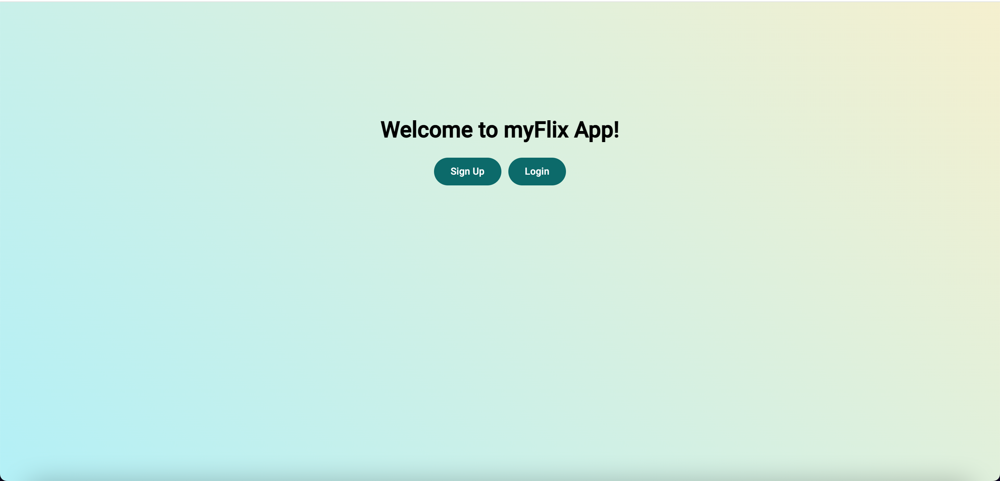
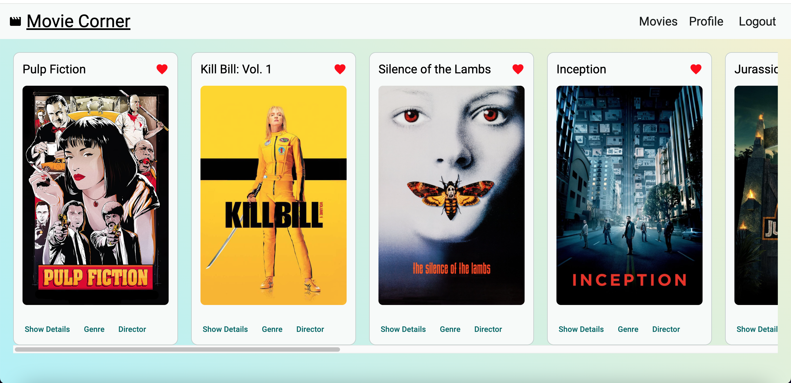
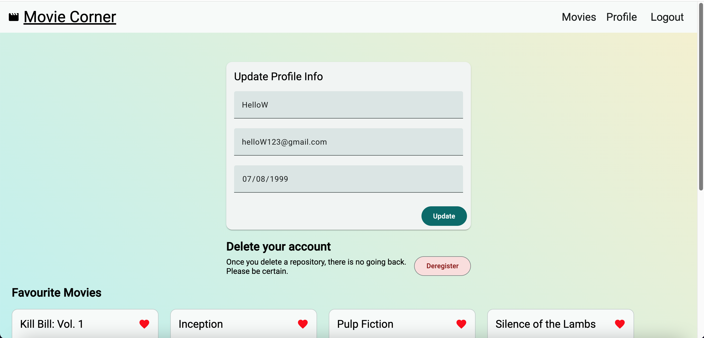

This is a client-side application for the movie_api, which provides a collection of movies. Users can register, log in, and add movies to their list of favorites. The application is built using Angular.
Follow these steps to set up the project locally:
Clone the Repository
git clone git@github.com:deeps4/myFlix-Angular-client.git
cd myFlix-Angular-client
Install Dependencies Ensure you have Node.js (v20 or higher) and npm (v10 or higher) installed.
npm install
Angular CLI If you haven't installed Angular CLI:
npm install -g @angular/cli
Add angular-cli-ghpages
ng add angular-cli-ghpages
Start the development server:
npm start
The app will be available at: http://localhost:8080
npx typedoc --out docs src/
docs folder to view the generated API documentation.The project is deployed using GitHub Pages.
npm run build --configuration production
ng deploy --base-href=/myFlix-Angular-client/
https://deeps4.github.io/myFlix-Angular-client


Contributions are welcome! To contribute:
For questions, reach out to:
Enjoy exploring MyFlix-Angular-Client! 🎬